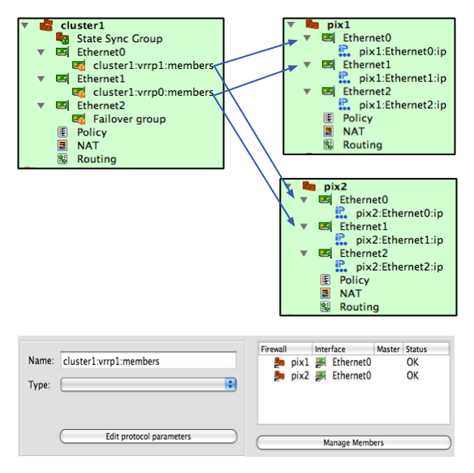
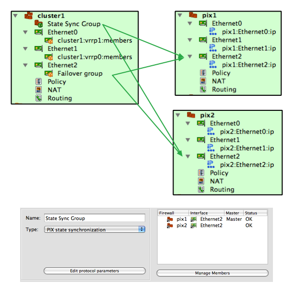

Firewall Builder v3.1.0 is internal testing release not intended for publication. Please do not distribute it. This version is preliminary, not suitable for production use, most likely has bugs and is made available for download to make it possible for selected users to test it and validate most important design decisions.
You can keep this window open while you are working with the GUI or open it again using main menu Help/Release Notes.
The editor panel and object tree are now detachable. You can "float" these windows and rearrange them on the screen any way you want. There is only one editor panel even when you open several data files at the dame time. Each data file is opened in its own project window with object tree and rules.
Selection of the object in the tree or rules does not automatically open it in the editor anymore. Use double click or context menu item "Edit" to open object in the editor. This helps, for example, when you need to populate large object group and need to switch between libraries to find objects. Switching to another library or accidentally clicking on a wrong object in the tree does not cause editor to switch.
"Single rule compile": After you select a rule in policy or NAT rule set, you can compile it and see the result in the editor panel immediately if you hit "X" on the keyboard or use context menu that appears if you click right mouse button. The result is shown in the editor panel immediately. To select a rule click anywhere in it (any rule element, not just rule number).
Error and warning messages generated by the policy compilers are highlighted using red and blue colors in the compiler output panel when you compile single rule. When you compile all rules of the firewall using toolbar buttons or main menu items "Compile" or "Install", errors and warnings are also highlighted in the dialog. Clicking on the error or warning message opens corresponding firewall and selects the rule that caused it.
A new "Filter" input field is located above the object tree. Typing fragment of the name in this field automatically limits set of objects shown in the tree to those that match what was typed. The filter maintain history of strings entered in it for the duration of the session.
Right above the panel showing rules there are now two new buttons. These allow you to compile and install policy for the firewall object shown in the rules panel at the moment. The same functions are available via context menu associated with the firewall or cluster object in the object tree, but these buttons are easier to use.
The GUI can show brief summary of object attributes in the second column in the object tree. This is controlled by a checkbox in the global preferences dialog, tab "Objects". This is off by default. The first column always shows object icon and its name, the second (optional) column shows its attributes. Interface label is shown in the second column. The width of both columns in the tree is set automatically to accommodate all the text, then can be adjusted by the user using mouse. Column width is saved in settings and will be restored upon program restart. Column width is saved per-file, per-library.
Now you can change ip addresses of interfaces of the new firewall created from a template. Templates come preconfigured with some IP addresses which probably do not match addresses used on your networks. When you create new firewall object from a template, the "new firewall" wizard includes interface editor page where you can change addresses and interface types (static or dynamic). The program not only changes addresses of interfaces, it also scans policy and NAT rules of the template looking for network objects that match original temlpate addresses and replaces them with network objects that match new ones.
Password caching: Built-in installer can remember firewall password (and enable password for Cisco) for the duration of the session. Passwords are never stored permanently in any form, encrypted or plain text. You need to enter password once when you activate generated policy. If you keep the program open and need to modify and activate policy again, the password fields in the installer dialog can be filled automatically. The feature is optional and is off by default. Cached passwords are associated with the firewall object and account name used to activate policy.
The program supports new types of interfaces: VLAN, bridge, bonding. This is fully implemented for Linux and partially for other platforms. VLANs are added as child objects of an interface, like so:

The GUI checks the name of the vlan subinterface against naming convention for vlan interfaces on the chosen OS. For example, both "eth0.100" and "vlan100" are supported on Linux, while on Cisco IOS or PIX it should be "FastEthernet0/1.101"
See below for more details on the bridge interfaces implementation.
The program can generate commands to configure vlans, bridges and bonding interfaces on Linux. This is off by default and controlled by checkboxes in the "script" tab of the firewall object dialog. Generated script adds and removes vlans, bridges, bridge ports, bond and bond slaves incrementally. That is, the script analyzes existing vlan interfaces and compares them with vlan interfaces defined in the Firewall Builder GUI and then adds new ones and removes those that do not exist in fwbuilder. The same algorithm is used to create bridges, add or remove bridge ports and create bonds and then add or remove slave interfaces.
Configlets: generated firewall script (for all platforms) is assembled from small fragments we call "configlets". These fragments are located in the /usr/share/fwbuilder/configlets (on Linux). Each configlet is a template that uses specially defined macros which the program replaces with actual strings and values when it generates firewall configuration. There are separate templates for different firewall platforms and for different parts of the configuration file to be created. Supported macros include simple variable expansion and conditional "If - then" construct. You can override configlets we provide with your own if you create directory "fwbuilder/configlets" in your home directory and place files with the same name there. This way, you can change virtually all aspects of generated configuration file.
Built-in policy installer gets commands that it needs to execute on the firewall from configlets. Two configlets are used for Unix-based firewalls (Linux, OpenWRT, Sveasoft, IPCOP and its variants, OpenBSD, FreeBSD, MacOSX, Solaris): "installer_commands_reg_user" and "installer_commands_root". You can change the behavior of the installer without having to touch C++ code, just create a copy of the configlet file in $HOME/fwbuilder/configlets and modify it.
Terminology for policy rule actions that create branching in the rule set or tag packets has been unified. Now we call these actions "Branch" and "Tag" for all platforms. Before, the name was different and matched original action on each platform, that is for PF it was "Anchor" and "Tag" and for iptables "Chain" and "Mark" respectively.
"Find where used" function can now find all uses of the given object, as well as all uses of its children. For example, if the object is firewall, then this function can find all groups and rules that refer to it directly, or to it and all its interfaces and their addresses. This extension is optional, it is controlled by a checkbox in the "Find" dialog.
Added a place in the global Preferences dialog for options specific for different object types. First parameters include options for DNSName and AddressTable to let the user decide if the newly created objects of these types should be automatically configured with "Compile Time" or "Run Time" mode. Also, added an option that makes DNSName object editor copy the name of the object into the DNS record input field when new object is created or whenever the name changes. This is useful when the user does not want to keep object name and dns record different because they need to enter the name only once.
"Batch install" checkbox moved to the page that shows compiler progress so the user can decide to do batch install right before they perform installations instead of doing this before they start compile.
Standard objects library now comes with new IPv6 Network objects. These objects represent IPv6 networks that should not be routed on the Internet. Included: RFC3849 "Documentation Network" 2001:db8::; RFC4291 "Link local" fe80::/10; RFC4773 "Experimental Network" 2001:0000::/29 to 2001:01F8::/29. Also added a group "ipv6 private" that includes all these networks.
Test data file cluster.fwb with examples of different cluster configurations is available for download here.
New object type "Cluster" (located under Clusters in the tree) represents the HA pair. You configure policy and NAT rules in the rule sets of this object rather than in the actual firewalls.
Here is what you need to do to set up HA configuration:
Firewall Builder supports PIX "lan based" failover configuration. Unlike in Linux or BSD, where each interface of the firewall runs its own instance of failover protocol, PIX runs one instance of failover protocol over dedicated interface. PIX can also run state synchronization protocol over the same or another dedicated interface. These dedicated interfaces should be connected via separate switch and do not see regular traffic. Here is how this is implemented in Firewall Builder:


Skip this if you do not use Firewall Builder to configure iptables firewalls in bridging configuration. Otherwise, please read on.
Previous versions of Firewall Builder provided an attribute "bridge port" in the dialog of the Interface object. If an interface marked as "bridge port" was used in the "Interface" column of a policy rule, fwbuilder policy compiler used "--physdev-in" or "--physdev-out" option instead of conventional "-i" or "-o" option. The attribute "bridge port" has been deprecated in the new version. You need to make changes to your firewall and interface objects manually in order to make your old configurations compile properly with new version of Firewall Builder.
First, check if you have an interface object to represent the bridge. Usually it will have a name br0 or similar. If you do not have this interface object in the firewall in Firewall Builder, please create it. Regardless whether this object existed before or you just created it, open it in the editor and click "Advanced Interface Settings" button in the dialog. This button and the dialog it opens are new in this version of the program. In the dialog that appears use drop-down menu "Device Type" to set its type to "Bridge". Then click "OK" to close the dialog and save configuration.
Next, find interface objects that should represent bridge ports and simply drag them and drop under the interface br0 (copy/paste works too). In the end, these interfaces become "children" of br0 and should be located in the branch of the tree rooted at br0. The program displays a comment "bridge port" next to the name of an interface like this in the tree. Here is how it looks like:

In this configuration we have bridge interface br0 and two bridge ports eth0 and eth1. Note how eth0 and eth1 are located in the tree under br0, on the same level as its IP address object.
This is it, bridge port interfaces will be recognized by the program again and it will generate proper iptables configuration.
When an interface with dynamic address is used in a policy or NAT rule, compiler generates shell script to read its ip addresses at the time of execution, assigns them to temporary shell variables and uses them in rules. In previous versions (fwbuilder v2 and v3) only the first IPv4 address of an inetrface was used. V4 uses all IPv4 and IPv6 addresses of the interface by creating a shell "for" loop in the script. Note that support for dynamic IPv6 addresses was broken in v3 completely, it was fixed in v4.
Policy compiler for iptables can generate shell commands to configure bridge, bonding and vlan interfaces (see above).
Added support for option "--random" in SNAT rules
Generated script can adjust conntrack kernel module parameters to tune its performance for firewalls that handle heavy traffic.
Generated iptables script now has standard structure per LSB ("Linux Standard Base Core Specification 3.1"). The script has the following actions controlled by the command line arguments: "start", "stop", "reload", "status". Action "start" reconfigured interfaces and then flushes current iptables tables and chains and loads new iptables configuration. Action "stop" flushes all tables and chains and sets default policy in all chains to "DROP" to shut down the firewall to all kinds of traffic. It can also optionally install iptables rules to permit ssh access to the firewall from the management workstation. Action "status" returns return code per LSB specification. Code 0 means the firewall is loaded and is running (but it does not check that the rules it is running with are those defined in fwbuilder). Return code 3 means iptables modules are not loaded or there are no tables. This return code means the firewall is not running or not configured. It also supports additional actions "interfaces" and "test_interfaces". Action "interfaces" only runs commands that manage ip addresses of interfaces, as well as configure vlan, bridge and bonding interfaces. Action "test_interfaces" runs the same commands in the test mode when it prints commands that would be executed but does not actually execute them.
Firewall Builder v4.0 comes with experimental integration with IPCOP firewalls. To turn it on, choose platform "iptables" and host OS "IPCOP firewall appliance". Generated script is supposed to be installed on the firewall as /etc/rc.d/rc.firewall.local and restarted by the command "/etc/rc.d/rc.firewall restart". Built-in policy installer in Firewall Builder GUI installs it using this name and run the restart command to activate it. Firewall Builder does not manage interfaces of IPCOP firewall to avoid conflicts with IPCOP itself, use fwbuilder only to generate iptables rules. The program comes with some template objects for IPCOP firewalls, you can use them when you create new Firewall object if you choose to create it from a template.
Another new host OS supported in Firewall Builder v4.0 is OpenWRT. This OS is very close to the stock Linux, the only difference is path to the system utilities such as lsmod, modprobe, vconfig and others can be slightly different.
User can now merge objects from two data files together using command line tool fwbedit just like the "Import library" function in the GUI.